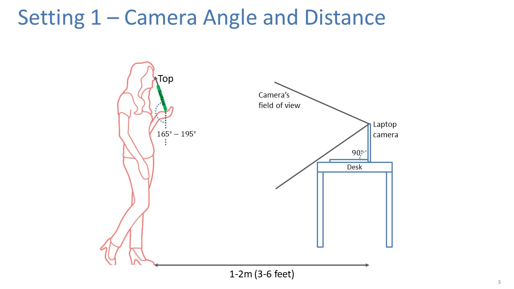
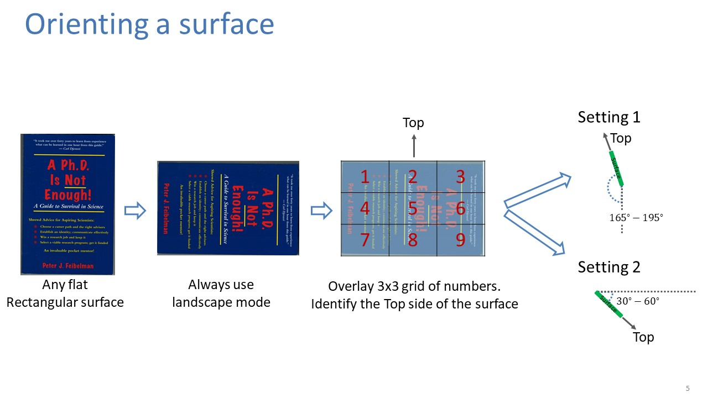
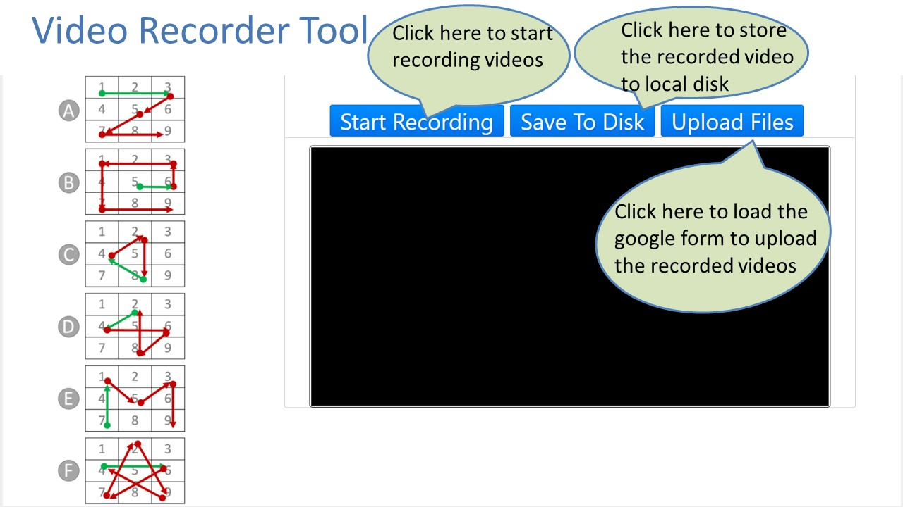

Data Collection Instructions
1 / 6
Step One
2 / 6
Step Two
3 / 6

Step Three
4 / 6
Step Four
5 / 6

Step Five
6 / 6

Step Six
❮
❯
Demo Video
This is a sample video that shows how video is recorded. When you are ready click on this
link
to start the process.